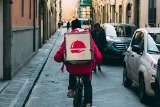

Pesquisar
Login
Resultados para:"..."
Golpe do Pix
As transferências bancarias ficaram muito mais simples hoje em dia com a criação do PIX, porem junto com ele também veio a criação de novos golpes, veja na matéria formas de se prevenir.
Golpe do Anúncio
Hoje em dia existe muitas plataformas de compra e venda de produto inclusive nas próprias redes sociais, dentro dessas vendas podem ter muitos golpistas tentando tirar o seu dinheiro, veja na matéria formas de se prevenir.
Golpe do Cartão Clonado
O cartão de crédito apareceu em nossas vidas como uma forma de pagamento para abrir diversas portas, e por isso se torna um alvo bastante chamativo, analise conosco formas de se prevenir e o que fazer caso seu cartão seja clonado.
Golpe do Boleto Falso
Os boletos bancários sempre foram a forma principal de pagamento, presentes até hoje mesmo após outras formas mais rápidas e eficientes serem desenvolvidas, sendo assim veja um exemplo de um golpe financeiro, o que fazer e como se prevenir.
Pirâmides Financeiras
O mercado de pirâmides financeiras já existe a bastante tempo mesmo sendo proibido aqui no Brasil, ainda assim, muitas pessoas por falta de informação acabam entrando em um esquema de pirâmide sem saber, veja na matéria formas de se prevenir.

Golpe do Delivery
Com a pandemia da COVID-19 o ser humano teve que se adaptar a novas formas de pedir alimentos, e com a tecnologia foi se inventado o entrega de alimentos até a sua casa, porém na hora do pagamento você pode se tornar vítima de um golpe, observe como se defender desse golpe e o que fazer caso você se torne uma vítima.